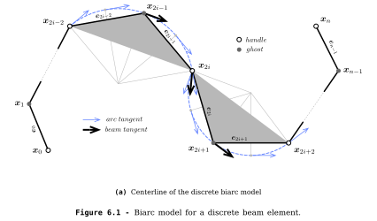

<section class="heading center">
	<h3>Discrete Beam Model</h3>
	<hr>
	<h4>The 4-DOFs Biarc Beam Model</h4>
	<aside class="notes">
		Un mot rapide sur le contexte.
	</aside>
</section>

<section class="">
	<h5 class="">Discrete Beam</h5>
	<ul>
		<li>Discrete centerline > $\mathbf{x}_i$</li>
		<li>Discrete material frame > $\{\mathbf{d}_3,\mathbf{d}_1,\mathbf{d}_2\}_i$</li>
	</ul>
	<hr>
	
</section>

<section class="ellipsis">
	<h5 class="">Smooth > Discrete</h5>
	<ul>
		<li>Tangent ? Extension ?</li>
		<li>Curvature ? Torsion ?</li>
	</ul>
	<hr>
	
</section>

<section class="ellipsis">
	<h5 class="">Discrete Curvature</h5>
	
	<div>
		<span class="" data-src="./img/eq/discrete_curvature_1.svg" data-fragment-index="0"></span>
		<span class="fragment imgsrc" data-src="./img/eq/discrete_curvature_2.svg" data-fragment-index="1"></span>
	</div>
</section>

<section class="ellipsis">
	<h5 class="">Discrete Curvature</h5>
	<table class="imgtable">
	<tr>
		<td></td>
		<td></td>
	</tr>
	<tr style="height:50px;"></tr>
	<tr>
		<td><small>circumscribed osculating circle ($\kappa_1$)</small><br></td>
		<td><small>inscribed osculating circle ($\kappa_3$)</small><br></td>
	</tr>
	<tr style="height:15px;"></tr>
	<tr style="border-top:0px solid black">
		<td></td>
		<td></td>
	</tr>
	</table>
</section>

<section class="ellipsis">
	<h5 class="">Discrete Curvature</h5>
	
	<div>
		<span class="" data-src="./img/eq/discrete_curvature_4.svg" data-fragment-index="0"></span>
		<span class="fragment imgsrc" data-src="./img/eq/discrete_curvature_3.svg" data-fragment-index="1"></span>
	</div>
</section>

<section class="ellipsis">
	<h5 class="">Circular Arch</h5>
	<br>
	
	<div>
		<span class="" data-src="./img/eq/discrete_curvature_arch_1.svg" data-fragment-index="0"></span>
		<span class="fragment imgsrc" data-src="./img/eq/discrete_curvature_arch_2.svg" data-fragment-index="1"></span>
	</div>
</section>
<section class="ellipsis">
	<h5 class="">Elastica Arch</h5>
	<br>
	
	<div>
		<span class="" data-src="./img/eq/discrete_curvature_elastica_1.svg" data-fragment-index="0"></span>
		<span class="fragment imgsrc" data-src="./img/eq/discrete_curvature_elastica_2.svg" data-fragment-index="1"></span>
	</div>
</section>

<section class="ellipsis">
		<h5 class="">Circumscribed Curvature</h5>
		<ul>
			<li>Good locality (vertex vs. edge quantity)</li>
			<li>Natural interpolation (circle)</li>
			<li>Better accuracy in terms of bending energy representation</li>
		</ul>
	</section>

<section class="">
		<h5 class="">Tangent Vector</h5>
		
		<div>
			<span class="" data-src="./img/eq/tangent_circumscribed_current.svg" data-fragment-index="0"></span>
			<span class="fragment imgsrc" data-src="./img/eq/tangent_circumscribed_ends.svg" data-fragment-index="1"></span>
		</div>
	</section>